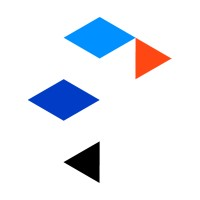
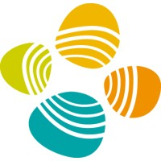

Experience

Postdoctoral Bioinformatician
Engineered production-grade Nextflow workflows for 20+ TB of Genomics England WGS data within a secure clinical research environment.
Automated clinical reporting workflows integrating variant calls and participant metadata, reducing turnaround to under 3 hours.

Postdoctoral Bioinformatician
Led bioinformatics delivery for a €4M European work package, coordinating 30+ researchers and partner sites across gene therapy and oncology projects.
Built single-cell and NGS workflows, standardizing QC and cross-site harmonization for translational and clinical-stage studies.
Administered and optimized a 7-node HPC cluster, supporting reproducible multi-user analysis with 99% compute availability.

Visiting Scientist · Gene Therapy
Harmonized scMultiome datasets across XPAND clinical sites to support cross-centre comparison and downstream translational analysis.
Validated LT-HSC signatures in AML-derived cells, linking multi-omic profiles to clinically relevant cell-state interpretation.

Visiting Scientist · Workflow & Data Systems
Designed Snakemake preprocessing workflows for large-scale NGS datasets, reducing turnaround time and standardizing execution.
Built relational databases to centralize experimental metadata and strengthen data integrity across collaborative projects.
Research Assistant & PhD Candidate
Optimized LC-MS and quantitative proteomics workflows, reducing turnaround time by 1.5 days and increasing sample throughput.
Developed traceability analytics for industrial quality control, translating experimental data into cost-saving decisions.